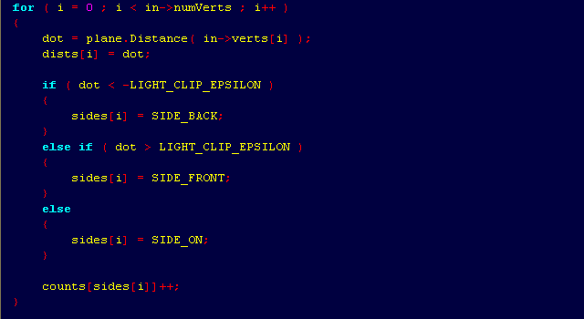

"이제 나는
어떠한 저항도 하지 않기로
결심했다."
1914년 8월 26일, 비트겐슈타인.
논리학
수학
물리학
전산학
컴퓨터공학
매체학
음악
철학
『C++ 기초』
『이펙티브 C++』
『이펙티브 STL』
『이펙티브 모던 C++』
『C++ 자료구조론』
『알고리즘 개론』
『전산 이론 개론』
『계산 복잡도』

01장
시작하기
02장
기본
03장
스트링, 벡터, 배열
04장
표현식
05장
문장
06장
함수
07장
클래스
08장
IO 라이브러리
09장
순차 컨테이너
10장
유전 알고리즘
11장
연관 컨테이너
12장
동적 메모리
13장
복사 제어
14장
오버로드된 연산자 및 변환
15장
객체 지향 프로그래밍
16장
템플릿과 일반화 프로그래밍
17장
라이브러리 특수 기능
18장
대형 프로그램을 위한 도구
19장
특수 도구 및 기법
부록 A
라이브러리